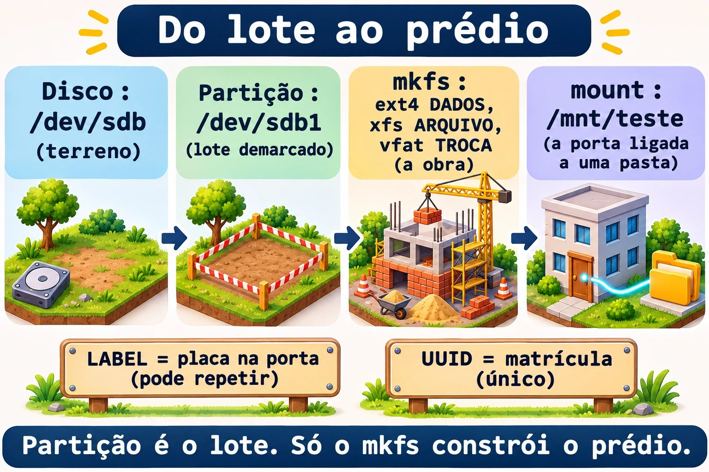
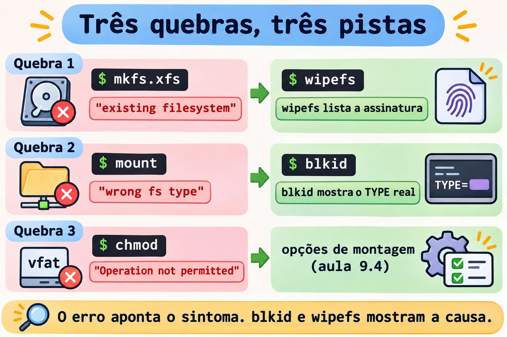

Aula 9.3 · Sistemas de arquivos
No Windows, você formata uma partição no Gerenciamento de Disco e escolhe NTFS. No Linux, a partição da aula 9.2 é só um espaço demarcado: nada que você grave nela ainda tem endereço. Nesta aula você cria três sistemas de arquivos diferentes (ext4, XFS e VFAT) nas três partições do disco novo, compara o comportamento de cada um e aprende a ler a identidade deles.
Núcleo desta aula: saber que partição e sistema de arquivos são coisas separadas; criar com
mkfs.ext4,mkfs.xfsemkfs.vfat; ler tipo, rótulo e UUID comblkidelsblk -f; montar temporariamente para testar; e conferir o alvo antes de qualquer comando que apaga. O resto é aprofundamento.
| Ficha | |
|---|---|
| Módulo | M9 · Armazenamento, aula 3 de 7 |
| Quando | Semana 13 |
| Ao final | Três sistemas de arquivos criados no scsi1, com rótulos DADOS, ARQUIVO e TROCA, e nada montado de forma permanente |
| Pré-requisitos | Aulas 9.1 e 9.2 |
| Tempo | cerca de 2h |
| Snapshots | m9a3-inicio e m9a3-fim na rocky-lab e na debian-lab |
1 · Aquecimento
Responda antes de ler.
- Uma partição recém-criada já pode guardar arquivos? Por quê?
- O que acontece com os dados de uma partição quando você roda
mkfsnela? - Dois discos têm o mesmo rótulo. Por que isso dá problema?
2 · Por que importa
| O chamado | A resposta errada | O que ela causa |
|---|---|---|
| "O disco novo não monta" | Tentar mount com tipos diferentes até um funcionar | Esconde o erro real: a partição nunca foi formatada |
| "Formatei o disco errado" | Rodar mkfs no /dev/sdb, "porque era o sdb ontem" | Perde dados. A ordem dos nomes sdX muda entre boots |
| "Preciso reduzir esse volume" | Tentar encolher um XFS | XFS não encolhe. Só se recria e se restaura |
"O pendrive FAT não aceita chmod" | Insistir com sudo | VFAT não tem dono nem permissões. Isso se resolve na montagem |
3 · Modelo mental
O disco é um terreno, e a partição é um lote demarcado. Um lote vazio não tem endereço. O
mkfsé a obra: levanta o prédio com índice de salas (os inodes), diário de obras (o journal) e livro de registro. O rótulo é a placa na porta: nome humano, pode repetir. O UUID é a matrícula no cartório: único, gerado na obra. Omountsó liga a porta do prédio a uma pasta da árvore.
Disco → Partição (lote) → mkfs (obra) → mount (porta)
/dev/sdb /dev/sdb1 ext4 DADOS /mnt/teste
/dev/sdb2 xfs ARQUIVO (um de cada vez)
/dev/sdb3 vfat TROCA
Identidade de um sistema de arquivos:
TYPE ext4, xfs, vfat como o espaço foi organizado
LABEL DADOS nome humano, mutável, pode repetir
UUID gerado pelo mkfs único: é o que o fstab usa (aula 9.4)Leia da esquerda para a direita: o mkfs só mexe na partição, e o mount só liga o resultado a uma pasta.


Ponte Windows
| No Windows | No Linux | Onde a comparação engana |
|---|---|---|
| Gerenciamento de Disco, "Formatar" | mkfs.TIPO | Sem assistente e sem perguntas |
| NTFS | ext4 ou XFS | O NTFS faz tudo. No Linux a escolha é por perfil de uso |
| FAT32 do pendrive | VFAT | Mesmo comportamento: sem dono, sem permissões |
Letra de unidade (E:) | Ponto de montagem | Você liga o sistema de arquivos onde quiser |
| Nome do volume | LABEL | Igual: pode repetir. O GUID do volume é o UUID |
4 · O essencial
Partição não é sistema de arquivos: o mkfs
A 9.2 criou o lote. Falta a obra. Todo mkfs.TIPO grava as estruturas na partição indicada e não pede confirmação se ela está vazia. Por isso o hábito vem antes: lsblk e /dev/disk/by-id/.
| Tipo | Comando | O que cada opção faz |
|---|---|---|
| ext4 | sudo mkfs.ext4 -L DADOS DISPOSITIVO | -L define o rótulo |
| XFS | sudo mkfs.xfs -L ARQUIVO DISPOSITIVO | -L define o rótulo |
| VFAT | sudo mkfs.vfat -F 32 -n TROCA DISPOSITIVO | -F 32 escolhe FAT32, -n define o nome do volume |
Se a partição já tiver um sistema de arquivos, o mkfs.xfs recusa. Não force: descubra primeiro o que existe ali.
Ler a identidade
| Quero... | Comando |
|---|---|
| Tipo, rótulo e UUID de tudo | sudo blkid |
| Árvore com tipo, rótulo, UUID e montagem | lsblk -f |
| Detalhes do ext4 | sudo tune2fs -l DISPOSITIVO |
| Detalhes do XFS (montado) | xfs_info PONTO_DE_MONTAGEM |
| Rótulo do ext4 | sudo e2label DISPOSITIVO |
| Rótulo do XFS | sudo xfs_admin -l DISPOSITIVO |
| Rótulo do VFAT | sudo fatlabel DISPOSITIVO |
O blkid lê o que está gravado no disco. O lsblk -f mostra o mesmo, mais a montagem.
Rótulos
| ext4 | XFS | VFAT | |
|---|---|---|---|
| Tamanho máximo | 16 | 12 | 11 |
| Mudar | e2label DISP NOVO | xfs_admin -L NOVO DISP | fatlabel DISP NOVO |
| Com a partição montada | Pode | Não pode | Pode |
Use maiúsculas e sem espaço. O UUID não muda com o rótulo.
Comparação: ext4 × XFS × VFAT
| ext4 | XFS | VFAT (FAT32) | |
|---|---|---|---|
| Padrão em | Debian | Rocky | pendrives, partição EFI |
| Journal | Sim | Sim | Não |
| Encolher | Sim, desmontado | Nunca | Só com ferramentas extras |
| Dono e permissões | Sim | Sim | Não (vêm da montagem) |
| Tamanho máximo de arquivo | 16 TiB | 8 EiB | 4 GiB menos 1 byte |
O journal é um diário: o sistema anota o que vai fazer antes de fazer, e após uma queda de energia evita a verificação demorada. Sem journal, o VFAT pode ficar corrompido.

Ver as assinaturas: wipefs
O wipefs DISPOSITIVO, sem opções, só lista as assinaturas de sistema de arquivos. Com -a, apaga. Nesta aula, o -a aparece apenas contra um arquivo de imagem, na Quebra 1.
Rocky × Debian
| Rocky | Debian | |
|---|---|---|
| Padrão do instalador | XFS | ext4 |
mkfs.xfs, xfs_info, xfs_admin | xfsprogs, já vem | sudo apt install xfsprogs |
mkfs.vfat, fatlabel | sudo dnf install dosfstools | sudo apt install dosfstools |
mkfs.ext4, tune2fs, e2label | e2fsprogs, já vem | e2fsprogs, já vem |
| Conferir pacote | rpm -q xfsprogs dosfstools | dpkg -s xfsprogs dosfstools |
Os comandos de mkfs e de leitura são idênticos nas duas.
5 · Lab guiado
Passo 0 · Snapshots e pacotes. O backup no PBS-LAB da 9.1 continua valendo: snapshot não é backup. No Proxmox:
qm snapshot 201 m9a3-inicio
qm snapshot 202 m9a3-inicioNa rocky-lab:
sudo dnf install -y dosfstools gdisk
rpm -q xfsprogs e2fsprogs dosfstoolsNa debian-lab:
sudo apt install -y xfsprogs dosfstools gdisk
dpkg -s xfsprogs dosfstools | grep -E '^(Package|Status)'O rpm -q e o dpkg -s dizem se o pacote está instalado. Os três nomes têm de aparecer sem erro.
Passo 1 · Conferir o alvo. Esta etapa não grava nada. Na rocky-lab (a mesma coisa na debian-lab):
ls -l /dev/disk/by-id/ | grep drive-scsi1
D=/dev/disk/by-id/scsi-0QEMU_QEMU_HARDDISK_drive-scsi1
lsblk -f "$D"
sudo wipefs "$D-part1" "$D-part2" "$D-part3"O D= guarda o nome estável do disco numa variável. Em outro terminal, defina de novo. Saída esperada:
... scsi-0QEMU_QEMU_HARDDISK_drive-scsi1 -> ../../sdb
... scsi-0QEMU_QEMU_HARDDISK_drive-scsi1-part1 -> ../../sdb1
(part2 e part3 também)
NAME FSTYPE FSVER LABEL UUID FSAVAIL FSUSE% MOUNTPOINTS
sdb
├─sdb1
├─sdb2
└─sdb3Este é o disco da aula 2.2, ampliado para 4 GB na 9.1. Na rocky-lab, o link /dev/lab-dados da 2.2 aponta para o mesmo disco, mas use o by-id, que existe nas duas VMs. Seu sdb pode ter outro nome. FSTYPE vazio e wipefs sem saída provam que as partições estão em branco. Se aparecer algum tipo, pare: o disco não é o que você acha, ou a 9.2 não terminou.
Passo 2 · ext4 na partição 1.
sudo mkfs.ext4 -L DADOS "$D-part1"mke2fs 1.46.5 (30-Dec-2021)
Creating filesystem with 262144 4k blocks and 65536 inodes
Filesystem UUID: 3f6c0a52-9b1e-4d4a-8d57-2f0e6c1d9a11
Superblock backups stored on blocks:
32768, 98304, 163840, 229376
Allocating group tables: done
Writing inode tables: done
Creating journal (8192 blocks): done
Writing superblocks and filesystem accounting information: donePasso 3 · XFS na partição 2.
sudo mkfs.xfs -L ARQUIVO "$D-part2"A saída é uma tabela meta-data=, data =, naming =, log =.
Passo 4 · VFAT na partição 3.
sudo mkfs.vfat -F 32 -n TROCA "$D-part3"mkfs.fat 4.2 (2021-01-24)Passo 5 · Ler a identidade.
sudo blkid "$D-part1" "$D-part2" "$D-part3"
lsblk -f "$D"/dev/sdb1: LABEL="DADOS" UUID="3f6c0a52-9b1e-4d4a-8d57-2f0e6c1d9a11" BLOCK_SIZE="4096" TYPE="ext4" PARTUUID="..."
/dev/sdb2: LABEL="ARQUIVO" UUID="a1d3...e7" BLOCK_SIZE="512" TYPE="xfs" PARTUUID="..."
/dev/sdb3: LABEL="TROCA" UUID="7C2E-1A09" BLOCK_SIZE="512" TYPE="vfat" PARTUUID="..."
NAME FSTYPE FSVER LABEL UUID FSAVAIL FSUSE% MOUNTPOINTS
sdb
├─sdb1 ext4 1.0 DADOS 3f6c0a52-...
├─sdb2 xfs ARQUIVO a1d3...
└─sdb3 vfat FAT32 TROCA 7C2E-1A09O UUID do VFAT é curto: é o número de série do volume. Os seus valores serão outros.
Passo 6 · Detalhes de cada tipo.
sudo tune2fs -l "$D-part1" | grep -E 'Filesystem (features|volume name|UUID)|Block count|Reserved block|Inode count|Journal'
sudo xfs_admin -l "$D-part2"
sudo fatlabel "$D-part3"O tune2fs -l lista o superbloco do ext4: procure has_journal. O xfs_admin -l mostra label = "ARQUIVO".
Passo 7 · Montar um de cada vez. Monte, compare e desmonte antes de passar ao seguinte.
sudo mkdir -p /mnt/teste
sudo mount "$D-part1" /mnt/teste
df -hT /mnt/teste
ls -la /mnt/teste
sudo touch /mnt/teste/a.txt
sudo chmod 600 /mnt/teste/a.txt
ls -l /mnt/teste/a.txt
sudo umount /mnt/testeFilesystem Type Size Used Avail Use% Mounted on
/dev/sdb1 ext4 974M 24K 923M 1% /mnt/testeO ext4 mostra a pasta lost+found, e o chmod 600 funciona. Repita com o XFS (part2), acrescentando xfs_info /mnt/teste | head -n 4. O XFS não tem lost+found, e o df já mostra algumas dezenas de MB usados antes de qualquer arquivo: são os metadados e o journal. Agora o VFAT:
sudo mount "$D-part3" /mnt/teste
df -hT /mnt/teste
sudo touch /mnt/teste/a.txt
ls -l /mnt/teste/a.txt
sudo chmod 600 /mnt/teste/a.txt
sudo umount /mnt/teste-rwxr-xr-x. 1 root root 0 ... /mnt/teste/a.txt
chmod: changing permissions of '/mnt/teste/a.txt': Operation not permittedNo VFAT, todos os arquivos são do root e têm rwxr-xr-x, e o chmod falha, mesmo com sudo. Isso é o que a Quebra 3 detalha.
Passo 8 · Mudar rótulos e voltar.
sudo e2label "$D-part1" TESTE
sudo e2label "$D-part1" DADOS
sudo xfs_admin -L TESTE "$D-part2"
sudo xfs_admin -L ARQUIVO "$D-part2"
lsblk -f "$D"O xfs_admin -L exige a partição desmontada. No fim, os rótulos têm de estar DADOS, ARQUIVO e TROCA: a 9.4 depende deles.
Passo 9 · debian-lab. Repita os passos 1 a 8 na debian-lab. Os comandos são os mesmos, e os UUIDs serão outros.
Decida 1
Um volume de arquivos de projeto vai crescer por meses, e a equipe talvez precise devolver espaço a outro volume. Qual sistema de arquivos?
A) XFS, o padrão da Rocky. B) ext4. C) VFAT, que o Windows lê.
Marque uma opção antes.
| Se você marcou | Resultado | Por quê |
|---|---|---|
| A | Risco | XFS cresce, mas não encolhe nunca. Devolver espaço exige recriar |
| B | Certo | Cresce montado e encolhe desmontado |
| C | Errado | Sem permissões, sem journal, arquivos de até 4 GiB |
Para fixar: escolha pelo que você vai precisar fazer depois.
Decida 2
Você precisa formatar "o disco de 4 GB". O lsblk mostra sdb e sdc, com 4 GB e 3 GB. Ontem o disco de 4 GB era o sdc. O que fazer?
A) Usar sdc, como ontem. B) Conferir ls -l /dev/disk/by-id/ e lsblk -f, e só então formatar. C) Rodar wipefs -a nos dois.
Marque uma opção antes.
| Se você marcou | Resultado | Por quê |
|---|---|---|
| A | Perigo | A ordem dos nomes sdX não é garantida |
| B | Certo | O by-id identifica o disco. O FSTYPE vazio confirma |
| C | Desastre | Apaga as assinaturas do disco que tinha dados |
Para fixar: lsblk e by-id antes de gravar.
6 · Quebre e conserte
Aqui você usa um arquivo de imagem em um loop, para nenhum erro atingir o scsi1. Na rocky-lab:
truncate -s 512M ~/fs-teste.img
sudo losetup --find --show ~/fs-teste.img
sudo mkfs.ext4 -L PRIMEIRO /dev/loop0
losetup -aO losetup --find --show imprime o nome escolhido. Se não for /dev/loop0, troque-o em todos os comandos abaixo.


Quebra 1 · A partição que já tem dono
sudo mkfs.xfs -L SEGUNDO /dev/loop0Sintoma: mkfs.xfs: /dev/loop0 appears to contain an existing filesystem (ext4) e a dica de usar -f.
Investigação: sudo blkid /dev/loop0 e sudo wipefs /dev/loop0 mostram o ext4 e o rótulo PRIMEIRO.
Causa: o mkfs.xfs detectou uma assinatura e protegeu os dados.
Conserto: neste exercício, o conteúdo não vale nada. Apague a assinatura e formate:
sudo wipefs -a /dev/loop0
sudo mkfs.xfs -L SEGUNDO /dev/loop0Num disco de verdade, só use o wipefs -a depois de conferir o alvo.
Quebra 2 · O tipo errado
sudo mount -t ext4 /dev/loop0 /mnt/testeSintoma: mount: /mnt/teste: wrong fs type, bad option, bad superblock on /dev/loop0, missing codepage or helper program, or other error.
Investigação: sudo blkid /dev/loop0 mostra TYPE="xfs". O sudo dmesg | tail -n 3 registra que o superbloco do ext4 é inválido.
Causa: você pediu ext4 para uma partição XFS.
Conserto: sudo mount /dev/loop0 /mnt/teste. Sem -t, o mount lê o tipo gravado. Depois, sudo umount /mnt/teste.
Quebra 3 · O VFAT que não obedece
sudo mkfs.vfat -F 32 -n TESTE /dev/loop0
sudo mount /dev/loop0 /mnt/teste
sudo touch /mnt/teste/x.txt
sudo chmod 600 /mnt/teste/x.txt
sudo chown nobody /mnt/teste/x.txtSintoma: Operation not permitted no chmod e no chown, mesmo com sudo. O ls -l mostra tudo como root root.
Investigação: mount | grep teste mostra vfat com fmask=0022,dmask=0022. Sem uid= e gid= nas opções, o dono é o root.
Causa: o FAT não guarda dono nem permissões. O kernel os inventa na montagem, pelas opções uid=, gid=, umask=.
Conserto: só pelas opções de montagem. A aula 9.4 faz isso em /srv/troca.
Limpeza
sudo umount /mnt/teste
sudo losetup -d /dev/loop0
rm ~/fs-teste.img
losetup -a
findmnt /mnt/testeO losetup -a não pode mais listar o arquivo, e o findmnt /mnt/teste não deve mostrar nada.
7 · Armadilhas
| Armadilha | O que acontece | Como evitar |
|---|---|---|
mkfs no disco inteiro, em vez da partição | Destrói a tabela de partições | Use -part1, -part2, e confira com lsblk |
Confiar no /dev/sdb | Formata o disco errado depois de um reboot | Use /dev/disk/by-id/ |
| Planejar encolher XFS | Impossível | Escolha ext4, ou aceite recriar |
Usar -f ou wipefs -a "para passar" | Apaga o que você não conferiu | Leia blkid e wipefs antes |
| Dados importantes em VFAT | Sem journal, sem permissões | VFAT só para troca e para a EFI |
8 · Quiz
Responda sem olhar. O gabarito está no fim da aula.
- Qual a diferença entre partição e sistema de arquivos?
- Por que o
mkfsnão deve ser feito no/dev/sdb1"porque ontem era esse"? - Qual o tamanho máximo do rótulo em ext4, XFS e VFAT?
- Qual desses não encolhe nunca: ext4, XFS ou VFAT?
- Por que o
chmodfalha em VFAT, mesmo comsudo? - Para que serve o journal, e qual desses três não tem?
9 · Cola
Para saber de cor:
| Quero... | Comando |
|---|---|
| ext4 com rótulo | sudo mkfs.ext4 -L NOME DISP |
| XFS com rótulo | sudo mkfs.xfs -L NOME DISP |
| FAT32 com nome | sudo mkfs.vfat -F 32 -n NOME DISP |
| Ver tipo, rótulo e UUID | sudo blkid, lsblk -f |
| Listar assinaturas | sudo wipefs DISP |
Para consultar:
| Quero... | Comando |
|---|---|
| Detalhes do ext4 | sudo tune2fs -l DISP |
| Rótulo do ext4 | sudo e2label DISP [NOVO] |
| Rótulo do XFS | sudo xfs_admin -l DISP, -L NOVO |
| Rótulo do VFAT | sudo fatlabel DISP [NOVO] |
Flashcards:
- Partição → lote, ainda não é prédio.
- XFS → cresce, nunca encolhe.
- VFAT → sem journal, sem permissões.
sdX→ muda. Oby-idfica.
10 · Checklist e fechamento
- [ ] Explico a diferença entre partição e sistema de arquivos
- [ ] Confiro o alvo com
lsblkeby-idantes de formatar - [ ] Crio ext4, XFS e VFAT, cada um com rótulo
- [ ] Sei o que cada tipo permite: encolher, journal, permissões
- [ ] Deixei os três rótulos como
DADOS,ARQUIVOeTROCA, e nada montado
Último exercício, sem olhar a aula: numa imagem nova de 512 MiB ligada a um loop, crie um XFS com o rótulo LIVRE, monte, grave um arquivo, desmonte e prove com blkid o tipo e o rótulo. Depois limpe.
Snapshot de fim (no Proxmox):
qm snapshot 201 m9a3-fim
qm snapshot 202 m9a3-fim11 · Na vida real
Missão, só leitura. Num servidor Linux que você administre (ou com autorização), rode apenas:
lsblk -f
sudo blkid
findmnt -t ext4,xfs,vfat -o TARGET,SOURCE,FSTYPE,OPTIONS
df -hT -x tmpfs -x devtmpfs
sudo tune2fs -l "$(findmnt -no SOURCE /)" 2>/dev/null | head -n 12
sudo xfs_info / 2>/dev/null | head -n 4Perguntas para responder:
- Quais tipos de sistema de arquivos o servidor usa, e onde?
- Algum volume tem rótulo repetido?
- Há VFAT além da partição EFI?
Diário: anote o que merece atenção. Não altere nada: nada de mkfs, wipefs -a ou fsck.
Amanhã, sem olhar: diga qual tipo não encolhe.
12 · Aprofundar quando quiser
- Man pages:
man mkfs.ext4,man mkfs.xfs,man mkfs.fat,man xfs_admin,man tune2fs,man blkid,man wipefs. - Red Hat: "Managing file systems", na documentação do RHEL 9.
- kernel.org: docs.kernel.org/filesystems (ext4 e XFS).
- util-linux: github.com/util-linux/util-linux.
- Debian: wiki.debian.org/FileSystem.
DeepTutor (http://10.1.0.149:3782, KB "Curso Linux Sysadmin"): !quiz Aula 9.3, 5 perguntas sobre mkfs, ext4, XFS e VFAT
Gabarito comentado
Aquecimento
- Não. A partição só delimita o espaço. Sem
mkfs, não existe estrutura para registrar arquivos. - Os dados ficam inacessíveis, porque as estruturas antigas são sobrescritas. Por isso, confira o alvo antes.
- A montagem por
LABEL=pode pegar o disco errado. O UUID é único.
Quiz
- A partição é um pedaço do disco, na tabela de partições. O sistema de arquivos é a organização interna dela, criada pelo
mkfs. - Porque os nomes
sdXdependem da ordem em que o kernel descobre os discos. Useby-id. - 16 no ext4, 12 no XFS e 11 no VFAT.
- XFS.
- Porque o FAT não guarda dono nem permissões. Esses valores vêm das opções de montagem.
- Para registrar o que será feito antes de fazer, e assim se recuperar de uma queda sem verificação longa. O VFAT não tem.